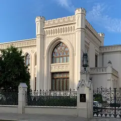
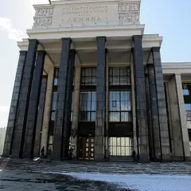
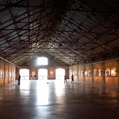
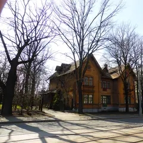
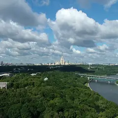
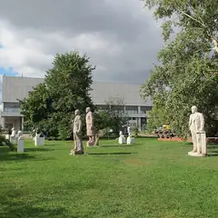
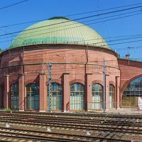
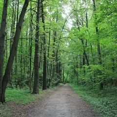
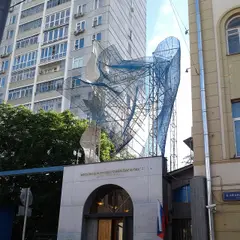

Подборку собрали 12 ноября, прошедшие события скрыты. Свежая афиша — на главной
Подборка · данные на 12 ноября
Недорогое свидание в Москве
50 планов, где каждая остановка обходится примерно до 1 500 ₽ на человека, а часть и вовсе бесплатна: парки, набережные, смотровые площадки. Ниже — ещё 141 место для свидания с таким же чеком и 2 события с бесплатным входом в ближайшие две недели. Цены — ориентир: меню и билеты лучше проверить перед выходом.
- 50 планов
- 141 место
- 2 бесплатных события
Планы до 1 500 ₽ на человека 24 из 50
- Культурный центр ЗИЛ · Культурный центр · м. Автозаводская
- 13 минут пешкомStrEAT · Фудхолл
Лекция или кино в конструктивистском ДК ЗИЛ, а потом фудхолл StrEAT в корпусе завода «Динамо»: дагестанские хинкалы или баббл-ти — каждый берёт своё.
Открыть план: ДК ЗИЛ и уличная едаПозвать сюда: ДК ЗИЛ и уличная еда
Фото: NVO, CC BY-SA 3.0 · Wikimedia Commons
- Музей-квартира Достоевского · Музей · м. Достоевская
- 12 минут пешкомФудхолл «Дружба» · Фудхолл
Квартира, где прошло детство Достоевского, а через десять минут — фудхолл «Дружба»: рамен, утка по-пекински или малатан, порции большие, цены спокойные.
Открыть план: Достоевский и фудхолл «Дружба»Позвать сюда: Достоевский и фудхолл «Дружба»
Фото: Lesio, CC BY-SA 3.0 · Wikimedia Commons

- Особняк Зинаиды Морозовой · Особняк · м. Баррикадная
- 5 минут пешкомПатриаршие пруды · Пруд и сквер
- 2 минуты пешкомI love cake · Кондитерская
Рассмотреть неоготический особняк, за четыре минуты дойти до Патриарших и сделать круг у воды, а потом вернуться на десерт в кондитерскую рядом.
Открыть план: Замок на Спиридоновке и прудПозвать сюда: Замок на Спиридоновке и пруд
Фото: Vzorets, CC BY-SA 4.0 · Wikimedia Commons
- Парк 40-летия Победы · Парк · Зеленоград — Крюково (МЦД-3)
- 27 минут пешкомBrunch Time · Кафе завтраков
Утренний круг вокруг пруда в главном парке Зеленограда, а потом Brunch Time, где драники, бенедикты и вафли с солёной карамелью подают весь день.
Открыть план: Зеленоград: пруд и завтрак весь деньПозвать сюда: Зеленоград: пруд и завтрак весь день
Фото: Sergey A. Demidov, CC BY 4.0 · Wikimedia Commons
- Клуб имени Русакова · Авангард Мельникова · м. Сокольники
- 12 минут пешкомСокольники · Парк
Три бетонных зуба зрительного зала над Стромынкой, а потом прогулка по аллеям Сокольников.
Открыть план: Клуб-шестерёнка Мельникова и СокольникиПозвать сюда: Клуб-шестерёнка Мельникова и Сокольники
Фото: Ludvig14, CC BY-SA 4.0 · Wikimedia Commons
- Сова · Кофейня · м. Волжская
- 27 минут пешкомУсадьба Люблино · Усадьба
Капучино за 150–350 ₽ в «Сове», куда можно с собакой, а потом прогулка к дворцу-ротонде и пруду усадьбы Люблино — на двоих выйдет дешевле одного ужина.
Открыть план: Кофе в «Сове» и Люблино с собакойПозвать сюда: Кофе в «Сове» и Люблино с собакой
Фото: NVO, CC BY 3.0 · Wikimedia Commons
- Перезвон · Кофейня в колокольне · м. Третьяковская
- 9 минут пешкомТретьяковка на Кадашёвской · Музей
Капучино под сводами колокольни XVIII века на Пятницкой, потом выставка в Третьяковке на Кадашёвской набережной.
Открыть план: Кофе в колокольне и КадашиПозвать сюда: Кофе в колокольне и Кадаши
Фото здания: Dmitry Ivanov., CC BY-SA 4.0 · Wikimedia Commons
- Особняк Арсения Морозова · Неомавританский особняк · м. Арбатская
- 12 минут пешкомОсобняк Рябушинского · Музей
Ракушки и витые колонны особняка Морозова на Воздвиженке, потом каменная лестница-волна Шехтеля в особняке Рябушинского.
Открыть план: Мавританский замок и лестница-волнаПозвать сюда: Мавританский замок и лестница-волна
Фото: Елена Нечипоренко, CC BY-SA 4.0 · Wikimedia Commons
- Музей космонавтики · Музей · м. ВДНХ
- 9 минут пешкомМоскино Космос · Кинотеатр
Спускаемые аппараты и скафандры под монументом «Покорителям космоса», а потом сеанс в кинотеатре «Космос» 1964 года — на огромном экране или в крошечном зале с пуфами. Билеты недорогие.
Открыть план: Музей космонавтики и кино в «Космосе»Позвать сюда: Музей космонавтики и кино в «Космосе»
Фото: Музей космонавтики, CC0 · Wikimedia Commons
- Особняк Зинаиды Морозовой · Особняк · м. Баррикадная
- 6 минут пешкомДом-музей Чехова · Музей
- 11 минут пешкомMátes · Кофейня
Два дома с историей в пяти минутах друг от друга: снаружи замок Морозовой, внутри скромный быт писателя. После музея — кофе неподалёку, чтобы обсудить увиденное.
Открыть план: Особняк и дом ЧеховаПозвать сюда: Особняк и дом Чехова
Фото: Vzorets, CC BY-SA 4.0 · Wikimedia Commons
- Посёлок «Сокол» · Исторический посёлок · м. Сокол
- 22 минуты пешкомClara · Кофейня
Тихие улицы посёлка «Сокол» с деревянными домами 1920-х, а потом Clara у «Октябрьского Поля»: мест много, раф с лавандой и канеле — можно сидеть и говорить часами.
Открыть план: Посёлок художников и кофеПозвать сюда: Посёлок художников и кофе
Фото: A.Savin, CC BY-SA 3.0 · Wikimedia Commons
- Доходный дом Исакова · Модерн · м. Парк культуры
- 4 минуты пешкомМансуровский переулок · Старый переулок
- 13 минут пешкомДом Бурганова · Музей скульптуры
Волнистый фасад Кекушева, кривой Мансуровский переулок и дворики Бурганова, где бронза стоит среди кирпичных арок.
Открыть план: Пречистенка: волнистый модерн и сад бронзыПозвать сюда: Пречистенка: волнистый модерн и сад бронзы
Фото: Moreorless, CC BY-SA 4.0 · Wikimedia Commons
- Введенское кладбище · Некрополь · м. Лефортово
- 20 минут пешкомЛефортовский парк · Парк
Сначала тихие аллеи с готическими надгробиями, затем минут пятнадцать пешком до парка с прудами и плотинами. Долгая прогулка, в которой хватает времени на разговор.
Открыть план: Склепы и старый парк ЛефортоваПозвать сюда: Склепы и старый парк Лефортова
Фото: Никонико962, CC BY-SA 4.0 · Wikimedia Commons
- Клуб имени Зуева · Конструктивизм · м. Белорусская
- 9 минут пешкомКультурный код · Кафе
Конструктивизм Голосова: вечером стеклянная лестница светится изнутри. Перед этим — кофе в «Культурном коде» на Чаянова.
Открыть план: Стеклянный цилиндр клуба ЗуеваПозвать сюда: Стеклянный цилиндр клуба Зуева
Фото: Guldfisken, CC BY-SA 3.0 · Wikimedia Commons
- Сходненская чаша · Природный памятник · м. Сходненская
- 17 минут пешкомИду лесом · Кофейня в усадьбе
Вид сверху на Сходненскую чашу — природный амфитеатр в Тушине, — потом по старому парку над Сходней в «Иду лесом»: мягкие диваны, книги и завтраки.
Открыть план: Сходненская чаша и кофейня в усадьбеПозвать сюда: Сходненская чаша и кофейня в усадьбе
Фото: barmalei1971, CC BY-SA 3.0 · Wikimedia Commons
- Хохловская площадь · Площадь-амфитеатр · м. Китай-город
- 1 минута пешкомOn Sight · Кофейня
Ступени амфитеатра у куска стены XVI века, кривые переулки горки и кофе через дорогу на Покровке.
Открыть план: Хохловка и Ивановская горкаПозвать сюда: Хохловка и Ивановская горка
Фото: T3ru, CC BY-SA 4.0 · Wikimedia Commons
- Гоголевский бульвар · Бульвар · м. Кропоткинская
- 4 минуты пешкомНитка · Русская чайная
Гоголевский бульвар под жёлтыми липами и долгий чай в отдельной комнате «Нитки».
Открыть план: Бульвар и самоварПозвать сюда: Бульвар и самовар
Фото: Alina Vozna, CC BY-SA 4.0 · Wikimedia Commons

- Ленинская библиотека · Библиотека с видом на Кремль · м. Библиотека имени Ленина
- 18 минут пешкомДом Перцовой · Доходный дом-терем
Бесплатные виды на Кремль из залов Ленинской библиотеки и дом Перцовой с павлинами и райскими птицами у Храма Христа Спасителя.
Открыть план: Виды из Ленинки и сказочный теремПозвать сюда: Виды из Ленинки и сказочный терем
Фото: krassotkin, CC BY 3.0 · Wikimedia Commons
- Дом Гоголя · Музей · м. Арбатская
- 4 минуты пешкомХудожественный · Кинотеатр
Дом, где Гоголь сжёг второй том «Мёртвых душ», и вечерний сеанс в старейшем кинотеатре Москвы.
Открыть план: Вий, Гоголь и киноПозвать сюда: Вий, Гоголь и кино
Фото: Shakko, CC BY-SA 4.0 · Wikimedia Commons
- Парк 40-летия Победы · Парк · Зеленоград — Крюково (МЦД-3)
- 19 минут пешкомЗеленоградский лесопарк · Лесопарк
Парк с прудом и прогулка по Зеленоградскому лесопарку.
Открыть план: Выходной в ЗеленоградеПозвать сюда: Выходной в Зеленограде
Фото: Sergey A. Demidov, CC BY 4.0 · Wikimedia Commons

- Винзавод · Центр современного искусства · м. Чкаловская
- 10 минут пешкомArtplay · Дизайн-центр
Несколько выставок подряд в бывших цехах, кофе и дизайн-лавки — разговор завяжется сам.
Открыть план: Галереи Винзавода и ArtplayПозвать сюда: Галереи Винзавода и Artplay
Фото: Lite, CC BY-SA 4.0 · Wikimedia Commons
- Музей «Гараж» · Музей современного искусства · м. Парк культуры
- 25 минут пешкомНескучный сад · Парк
Современное искусство, а потом долгая прогулка вдоль реки в самую тихую часть Парка Горького.
Открыть план: Гараж и Нескучный садПозвать сюда: Гараж и Нескучный сад
Фото: Garage Museum of Contemporary Art, CC BY-SA 4.0 · Wikimedia Commons
- ГЭС-2 · Дом культуры · м. Кропоткинская
- 15 минут пешкомМузеон · Парк
Бесплатные выставки в бывшей электростанции, а потом прогулка вдоль реки до Музеона.
Открыть план: ГЭС-2 и прогулка к МузеонуПозвать сюда: ГЭС-2 и прогулка к Музеону
Фото: Юрий Д.К., CC BY 4.0 · Wikimedia Commons

- Домик Вильямса · Деревянный дом в саду · м. Петровско-Разумовская
- 25 минут пешкомТимирязевский парк · Лесопарк
Сначала «викторианский» деревянный дом, привезённый из Англии в 1876 году, и сад, осенью увитый красным плющом, а потом минут 25 пешком до вековых деревьев и Большого садового пруда Тимирязевского парка — дорога тоже часть прогулки.
Открыть план: Домик в плюще и лес ТимирязевкиПозвать сюда: Домик в плюще и лес Тимирязевки
Фото: Kemal KOZBAEV, CC BY-SA 4.0 · Wikimedia Commons


Недорогие места для свидания 24 из 141
Красная площадь
Главная площадь страны: Кремль, Василий Блаженный, ГУМ и Исторический музей в одном кадре.
Подробнее и маршрут: Красная площадьПозвать сюда: Красная площадь
Фото: mos.ru, CC BY 4.0 · Wikimedia Commons
ул. Спиридоновка, 17
Новое
Неоготический особняк, похожий на английский замок, с интерьерами по эскизам Врубеля; красивая точка для прогулки по Спиридоновке.
Подробнее и маршрут: Особняк Зинаиды МорозовойПозвать сюда: Особняк Зинаиды Морозовой
Фото: Vzorets, CC BY-SA 4.0 · Wikimedia Commons
Большой Патриарший пер.
Пруд из «Мастера и Маргариты»: скамейки, кафе вокруг, зимой — каток.
Подробнее и маршрут: Патриаршие прудыПозвать сюда: Патриаршие пруды
Фото: Dimа, CC BY-SA 3.0 · Wikimedia Commons
Чистопрудный бул.
Бульвар с прудом: летом лодки и лебеди, зимой каток. Рядом Меншикова башня.
Подробнее и маршрут: Чистые прудыПозвать сюда: Чистые пруды
Фото: SergeyStepykin, CC BY-SA 3.0 · Wikimedia Commons
Александровский сад
Сад вдоль Кремлёвской стены: Вечный огонь, Итальянский грот и смена почётного караула.
Подробнее и маршрут: Александровский садПозвать сюда: Александровский сад
Фото: Надежда Пивоварова, CC BY-SA 3.0 · Wikimedia Commons
ул. Арбат
Старейшая пешеходная улица: уличные музыканты, художники, Стена Цоя и квартира Пушкина.
Подробнее и маршрут: АрбатПозвать сюда: Арбат
Фото: Alex 'Florstein' Fedorov, CC BY-SA 4.0 · Wikimedia Commons
Зеленоград, ул. Юности, 17
Новое
Драмтеатр Зеленограда в здании после реставрации: комедии и исторические драмы, сильная труппа, удобные кресла и буфет. Билеты 600–2400 ₽.
Подробнее и маршрут: Ведогонь-театрПозвать сюда: Ведогонь-театр
Фото: Perituss, CC BY-SA 3.0 · Wikimedia Commons

ул. Косыгина, смотровая площадка
Лесистый склон над Москвой-рекой. У главного здания МГУ — смотровая с видом на Лужники и Сити.
Подробнее и маршрут: Воробьёвы горыПозвать сюда: Воробьёвы горы
Фото: Niklitov, CC BY-SA 4.0 · Wikimedia Commons
пр. Андропова, 39
Холмы над рекой, белая церковь Вознесения и деревянный дворец царя Алексея Михайловича.
Подробнее и маршрут: КоломенскоеПозвать сюда: Коломенское
Фото: Ludvig14, CC BY-SA 4.0 · Wikimedia Commons
Большая Садовая ул., 10
«Нехорошая квартира» №50, где жил Булгаков. Вт–вс, по четвергам до 21:00.
Подробнее и маршрут: Музей БулгаковаПозвать сюда: Музей Булгакова
Фото: NVO, CC BY-SA 3.0 · Wikimedia Commons
пр. Мира, 111
Под монументом «Покорителям космоса»: настоящие спускаемые аппараты, скафандры и макет станции «Мир».
Подробнее и маршрут: Музей космонавтикиПозвать сюда: Музей космонавтики
Фото: Музей космонавтики, CC0 · Wikimedia Commons

Крымский Вал, 2
Парк скульптур и прогулка по набережной Москвы-реки.
Подробнее и маршрут: МузеонПозвать сюда: Музеон
Фото: sailko, CC BY-SA 3.0 · Wikimedia Commons
ул. Крымский Вал, 9
Главный парк города: набережная, Голицынский пруд, летние веранды, а зимой — большой каток.
Подробнее и маршрут: Парк ГорькогоПозвать сюда: Парк Горького
Фото: A.Savin, Free Art License · Wikimedia Commons
ул. Сокольнический Вал, 1
Большой парк с лучевыми аллеями, розарием, прокатом и выходом в лес.
Подробнее и маршрут: СокольникиПозвать сюда: Сокольники
Фото: Alexx Zimin, CC BY-SA 4.0 · Wikimedia Commons

Новорязанская ул., 23, стр. 1
60 корнеров в бывшем троллейбусном депо и большая крыша-терраса. До 23, в пт–сб до 00.
Подробнее и маршрут: Три вокзала. ДепоПозвать сюда: Три вокзала. Депо
Фото: A.Savin, Free Art License · Wikimedia Commons
Большая Косинская ул., 45
Яхт-клуб на Белом озере: прогулочная зона, разноцветные домики и атмосфера курортного городка на востоке Москвы.
Подробнее и маршрут: Белое озеро в КосинеПозвать сюда: Белое озеро в Косине
Фото: Sergey Ashmarin, CC BY-SA 3.0 · Wikimedia Commons

Новоясеневский просп., 21 к3
Огромный лес на юго-западе: экотропы, родники и конноспортивный комплекс.
Подробнее и маршрут: Битцевский лесПозвать сюда: Битцевский лес
Фото: Stolbovsky, CC BY-SA 4.0 · Wikimedia Commons
Наличная ул., 1
Новое
Старинный некрополь с готическими склепами и надгробиями; место для тихой прогулки и разговоров не о работе.
Подробнее и маршрут: Введенское кладбищеПозвать сюда: Введенское кладбище
Фото: Никонико962, CC BY-SA 4.0 · Wikimedia Commons
Гоголевский бул.
Тенистый бульвар от Арбатской площади к Храму Христа Спасителя.
Подробнее и маршрут: Гоголевский бульварПозвать сюда: Гоголевский бульвар
Фото: Alina Vozna, CC BY-SA 4.0 · Wikimedia Commons
ул. Пречистенка, 12/2
Главный пушкинский музей в усадьбе Хрущёвых на Пречистенке.
Подробнее и маршрут: Государственный музей ПушкинаПозвать сюда: Государственный музей Пушкина
Фото: NVO, CC BY-SA 2.5 · Wikimedia Commons
Болотная наб., 15
Бывшая электростанция напротив Кремля: выставки, кино и бар у входа. Вход бесплатный по регистрации на сайте, 11:00–22:00.
Подробнее и маршрут: ГЭС-2Позвать сюда: ГЭС-2
Фото: Юрий Д.К., CC BY 4.0 · Wikimedia Commons

Большой Афанасьевский пер., 15, стр. 9
Новое
Музей скульптора в старых домах у Арбата: два внутренних дворика и сад, где бронза стоит среди кирпичных стен и арок, плюс подземные залы. Лучше в солнечный день.
Подробнее и маршрут: Дом БургановаПозвать сюда: Дом Бурганова
Фото: Apr1, CC BY-SA 4.0 · Wikimedia Commons
Никитский бул., 7А
Усадьба на Никитском бульваре, где Гоголь сжёг второй том «Мёртвых душ».
Подробнее и маршрут: Дом ГоголяПозвать сюда: Дом Гоголя
Фото: Shakko, CC BY-SA 4.0 · Wikimedia Commons
Староконюшенный пер., 36
Новое
Бревенчатый терем 1872 года с резными наличниками и фронтонами стоит среди каменных домов арбатских переулков. Фасад обращён к Староконюшенному, лучше смотреть днём.
Подробнее и маршрут: Дом ПороховщиковаПозвать сюда: Дом Пороховщикова
Фото: Lite, CC BY-SA 3.0 · Wikimedia Commons


Бесплатные события 2
Музей «Гараж», −1 этаж · м. Октябрьская · бесплатно · 12+
Инсталляция-диалог: две лампы общаются вспышками и звуком, а розовая зеркальная комната множит тебя до бесконечности. Вход бесплатный, фото выходят эффектные.
Подробнее: Вадим Фишкин «Словарь воображаемых мест»Позвать сюда: Вадим Фишкин «Словарь воображаемых мест»Билеты : Вадим Фишкин «Словарь воображаемых мест» (страница с билетами, откроется в новой вкладке)
Фото: Garage Museum of Contemporary Art, CC BY-SA 4.0 · Wikimedia Commons
Музей «Гараж», мезонин · м. Октябрьская · бесплатно · 12+
Можно поиграть в искусство: две 8-битные игры-инсталляции индийской художницы по мотивам советских детских книг. Бесплатно, а рядом Парк Горького.
Подробнее: Видеоигры Афры ШафикПозвать сюда: Видеоигры Афры ШафикБилеты : Видеоигры Афры Шафик (страница с билетами, откроется в новой вкладке)
Фото: Garage Museum of Contemporary Art, CC BY-SA 4.0 · Wikimedia Commons
Как позвать
- Выбери план, место или событие — в карточке адрес, цены и маршрут в Яндекс Картах.
- Нажми «Позвать сюда» — соберётся приглашение-игра для свидания или голосование для компании.
- Отправь ссылку в любой мессенджер: тебе ответят, а компания отметит, куда и когда может. Бесплатно и без регистрации.